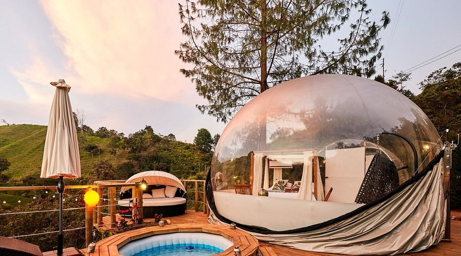

Tendes Bombolles per veure les estrelles i els estels per la nit
Les tendes bombolla són una de les opcions d'allotjament més innovadores i captivadores per als amants de la natura i l'astronomia. Aquestes estructures transparents permeten als visitants gaudir d'una vista panoràmica del cel nocturn, sense renunciar a les comoditats modernes. Equipades amb llits confortables, climatització i fins i tot banys privats, les tendes bombolla ofereixen una experiència de luxe en plena natura.
Una de les principals atraccions d'aquest tipus d'allotjament és la possibilitat d'observar les estrelles i els estels sense cap tipus de contaminació lumínica. Situades en zones remotes i envoltades de paisatges espectaculars, les tendes bombolla són ideals per a escapades romàntiques, viatges en família o simplement per desconnectar del ritme frenètic de la vida quotidiana.
A més de l'experiència nocturna, moltes d'aquestes tendes estan ubicades en llocs que ofereixen una gran varietat d'activitats diürnes. Des de rutes de senderisme fins a passejades en bicicleta o visites a parcs naturals, els visitants poden gaudir d'un dia ple d'aventures abans de relaxar-se sota el cel estrellat.
-
"Dormir en una tenda bombolla és com estar en un somni. La sensació de veure les estrelles des del teu llit és simplement inoblidable."
Si busques una experiència única que combini natura, confort i un toc de màgia, les tendes bombolla són l'opció perfecta. Reserva la teva estada i prepara't per viure una nit sota les estrelles que recordaràs per sempre.